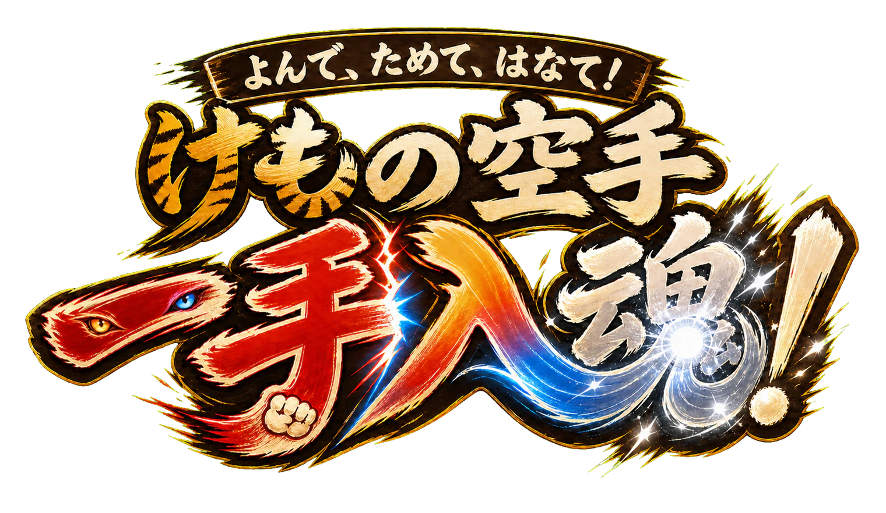

オンライン対戦ルーム
ふたりで技を選んで、先に三本取ろう。
相手の入室を待っています
相手に伝える部屋番号
あそびかた
ためると気合いが1増えます。はなつと全部の気合いを使い、ためている相手から一本取れます。お互いにはなつと、気合いが多い方が一本。同じなら相殺です。
まもると攻撃を防げます。気合い5では「はなつ」だけが使え、まもりを破れます。一本の後は、それぞれ取られた本数ぶんの気合いで再開します。

ふたりで技を選んで、先に三本取ろう。
相手に伝える部屋番号
ためると気合いが1増えます。はなつと全部の気合いを使い、ためている相手から一本取れます。お互いにはなつと、気合いが多い方が一本。同じなら相殺です。
まもると攻撃を防げます。気合い5では「はなつ」だけが使え、まもりを破れます。一本の後は、それぞれ取られた本数ぶんの気合いで再開します。